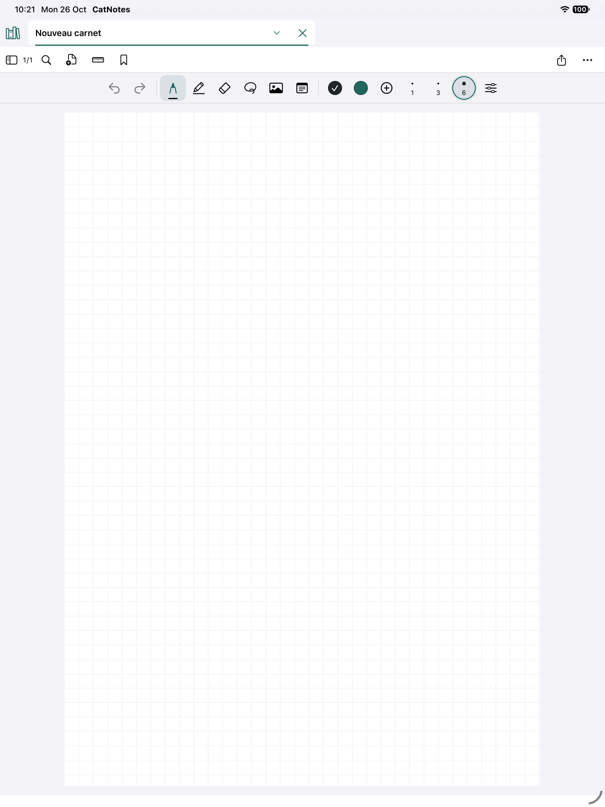
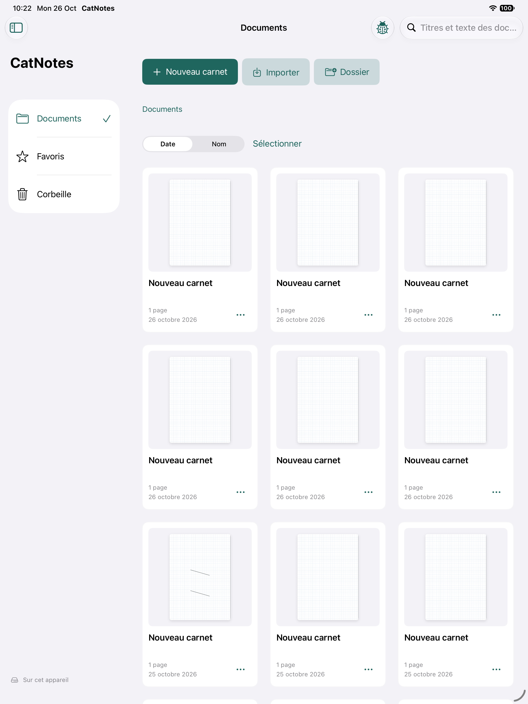
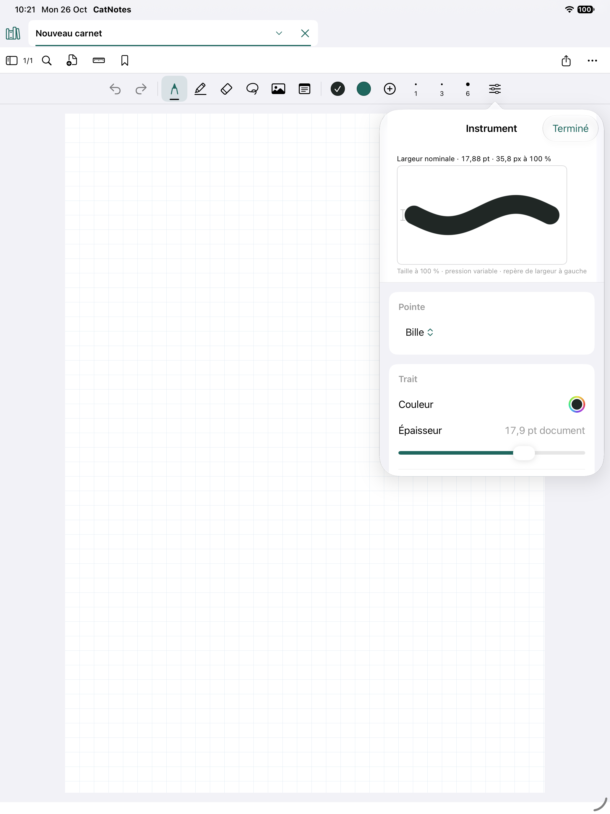

Make your mark.
Pen, pencil, highlighter and a custom instrument bar. Find your color, set your width and see how your next stroke will look.
Your handwriting. Your PDFs. Your own quiet corner on iPad and iPhone.
Meet Cat Notes, a native notebook taking its first steps. Built for the feeling of putting pen to paper.
Build 8 · iOS 16+ · Unsigned IPA — signing required

THE REAL APP, CAPTURED ON IPAD SIMULATOR · BUILD 8
Pen, pencil, highlighter and a custom instrument bar. Find your color, set your width and see how your next stroke will look.
Organize notebooks in folders, mark favorites and move between open tabs. Bring PDFs, images and text onto the page.
Export a PDF to share, or a native .catnote backup to keep editing. Local storage works without an account.


Cat Notes is far from a final release. Sharing it now means you can explore what exists, see how it works and help shape what comes next.
Read the build 8 release notes ↗System frameworks. A checked-in Xcode project. No package installation or backend required for local use.
Start developingClone the public repository and open CatNotes.xcodeproj.
Select the CatNotes scheme and an installed iPad or iPhone simulator. Press Run.
Follow the contributor guide, run the affected tests and share a focused pull request.